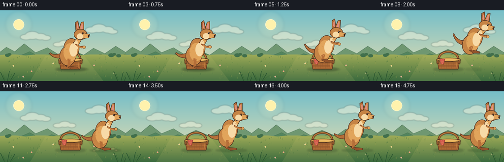
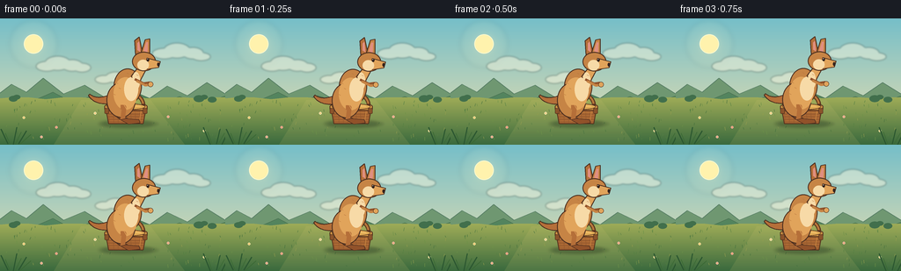
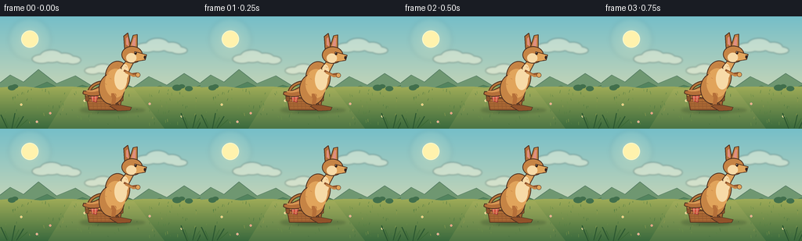
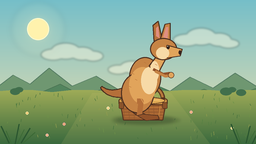
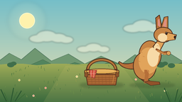
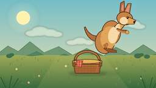
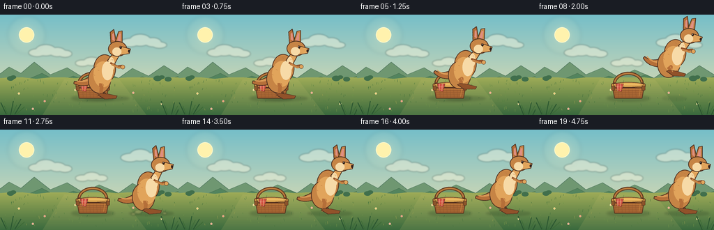

CODING AGENTS AS PIXEL WORLD MODELS
traex/DeepSeek-V4.1-Flash · dynamic_spatial_relationship_0033
点击播放 · 原生 RGB 像素
逐轮保存的候选
回放视频、检查图与代码变化。
每份候选均可单独播放。实际图片检查记录在下方工具轨迹中。
候选 01播放与检查图
点击播放 · 原生 RGB 像素


展开代码变化
--- 上一保存版本
+++ 本次保存版本
@@ -0,0 +1,538 @@
+from pathlib import Path
+import math
+import random
+
+import numpy as np
+from PIL import Image, ImageDraw, ImageFilter
+
+import artifact_io
+
+
+CASE_DIR = Path(__file__).resolve().parent
+W, H = 256, 144
+FPS = 4
+N_FRAMES = 20
+S = 4
+SW, SH = W * S, H * S
+
+
+def sc(value):
+ return int(round(value * S))
+
+
+def box(values):
+ return tuple(sc(value) for value in values)
+
+
+def ellipse(draw, values, fill, outline=None, width=1.0):
+ draw.ellipse(
+ box(values),
+ fill=fill,
+ outline=outline,
+ width=max(1, sc(width)) if outline else 0,
+ )
+
+
+def polygon(draw, points, fill, outline=None, width=1.0):
+ scaled = [(sc(x), sc(y)) for x, y in points]
+ draw.polygon(scaled, fill=fill)
+ if outline:
+ draw.line(scaled + [scaled[0]], fill=outline, width=max(1, sc(width)), joint="curve")
+
+
+def line(draw, points, fill, width=1.0):
+ draw.line([(sc(x), sc(y)) for x, y in points], fill=fill, width=max(1, sc(width)), joint="curve")
+
+
+def rounded_rect(draw, values, radius, fill, outline=None, width=1.0):
+ draw.rounded_rectangle(
+ box(values),
+ radius=sc(radius),
+ fill=fill,
+ outline=outline,
+ width=max(1, sc(width)) if outline else 0,
+ )
+
+
+def vertical_gradient(size, top, bottom):
+ width, height = size
+ y = np.linspace(0.0, 1.0, height, dtype=np.float32)[:, None]
+ top_arr = np.asarray(top, dtype=np.float32)[None, :]
+ bottom_arr = np.asarray(bottom, dtype=np.float32)[None, :]
+ rows = np.rint(top_arr * (1.0 - y) + bottom_arr * y).astype(np.uint8)
+ arr = np.repeat(rows[:, None, :], width, axis=1)
+ return Image.fromarray(arr, "RGB").convert("RGBA")
+
+
+def alpha_layer():
+ return Image.new("RGBA", (SW, SH), (0, 0, 0, 0))
+
+
+def quadratic_curve(p0, p1, p2, steps=36):
+ result = []
+ for i in range(steps + 1):
+ t = i / steps
+ u = 1.0 - t
+ result.append(
+ (
+ u * u * p0[0] + 2.0 * u * t * p1[0] + t * t * p2[0],
+ u * u * p0[1] + 2.0 * u * t * p1[1] + t * t * p2[1],
+ )
+ )
+ return result
+
+
+def tapered_curve(draw, p0, p1, p2, start_width, end_width, fill, outline, steps=38):
+ points = quadratic_curve(p0, p1, p2, steps)
+ left = []
+ right = []
+ for index, point in enumerate(points):
+ prev_point = points[max(0, index - 1)]
+ next_point = points[min(len(points) - 1, index + 1)]
+ dx = next_point[0] - prev_point[0]
+ dy = next_point[1] - prev_point[1]
+ length = math.hypot(dx, dy) or 1.0
+ nx, ny = -dy / length, dx / length
+ half_width = (start_width * (1.0 - index / steps) + end_width * index / steps) * 0.5
+ left.append((point[0] + nx * half_width, point[1] + ny * half_width))
+ right.append((point[0] - nx * half_width, point[1] - ny * half_width))
+ shape = left + list(reversed(right))
+ polygon(draw, shape, fill, outline, 1.0)
+
+
+def make_background():
+ image = vertical_gradient((SW, SH), (117, 190, 200), (239, 224, 173))
+
+ glow = alpha_layer()
+ glow_draw = ImageDraw.Draw(glow)
+ for radius, alpha in ((27, 18), (20, 28), (14, 45), (10, 80)):
+ ellipse(
+ glow_draw,
+ (38 - radius, 29 - radius, 38 + radius, 29 + radius),
+ (255, 244, 194, alpha),
+ )
+ image.alpha_composite(glow.filter(ImageFilter.GaussianBlur(sc(2.4))))
+ draw = ImageDraw.Draw(image)
+ ellipse(draw, (27, 18, 49, 40), (255, 242, 173, 255), (255, 249, 205, 255), 1.0)
+
+ clouds = alpha_layer()
+ cloud_draw = ImageDraw.Draw(clouds)
+ cloud_groups = [
+ [(41, 49, 65, 60), (51, 43, 80, 59), (70, 47, 94, 60), (83, 51, 103, 61)],
+ [(173, 34, 200, 46), (186, 28, 216, 45), (207, 33, 231, 46), (218, 39, 239, 48)],
+ [(108, 65, 128, 74), (120, 61, 143, 73), (137, 65, 154, 74)],
+ ]
+ for group in cloud_groups:
+ for shape in group:
+ ellipse(cloud_draw, shape, (255, 249, 224, 112))
+ image.alpha_composite(clouds.filter(ImageFilter.GaussianBlur(sc(1.0))))
+ draw = ImageDraw.Draw(image)
+
+ # Distant blue-green ridges and low scrub.
+ polygon(
+ draw,
+ [(-8, 91), (13, 75), (30, 84), (49, 68), (72, 86), (96, 76), (119, 90), (142, 79),
+ (170, 91), (190, 77), (213, 88), (235, 73), (264, 91), (264, 103), (-8, 103)],
+ (111, 151, 113),
+ (87, 126, 101),
+ 0.7,
+ )
+ polygon(
+ draw,
+ [(-6, 96), (16, 88), (37, 94), (60, 84), (83, 96), (105, 88), (131, 96),
+ (158, 86), (181, 96), (204, 89), (229, 97), (263, 86), (263, 107), (-6, 107)],
+ (83, 132, 94),
+ (72, 111, 80),
+ 0.7,
+ )
+
+ ground = vertical_gradient((SW, sc(54)), (158, 171, 87), (57, 105, 61))
+ ground_mask = Image.new("L", (SW, SH), 0)
+ mask_draw = ImageDraw.Draw(ground_mask)
+ horizon = [(0, 91), (24, 89), (52, 92), (80, 89), (108, 91), (137, 88), (167, 91),
+ (196, 89), (226, 91), (256, 89), (256, 144), (0, 144)]
+ mask_draw.polygon([(sc(x), sc(y)) for x, y in horizon], fill=255)
+ image.paste(ground, (0, sc(90)), ground_mask.crop((0, sc(90), SW, SH)))
+ draw = ImageDraw.Draw(image)
+
+ # A sun-warmed path of light across the grass.
+ path_layer = alpha_layer()
+ path_draw = ImageDraw.Draw(path_layer)
+ polygon(
+ path_draw,
+ [(92, 93), (171, 93), (210, 144), (61, 144)],
+ (212, 199, 116, 33),
+ )
+ image.alpha_composite(path_layer)
+ draw = ImageDraw.Draw(image)
+
+ # Meadow texture, kept sparse so the main objects stay legible.
+ rng = random.Random(28)
+ for _ in range(115):
+ x = rng.uniform(2, 254)
+ y = rng.uniform(94, 140)
+ length = rng.uniform(1.2, 4.0)
+ shade = rng.choice([(83, 127, 66), (109, 145, 72), (68, 112, 61), (147, 157, 78)])
+ line(draw, [(x, y), (x + rng.uniform(-1.0, 1.0), y - length)], shade, 0.45)
+
+ for x, y, color in [
+ (27, 113, (237, 221, 155)), (64, 124, (229, 161, 154)),
+ (108, 108, (243, 232, 180)), (191, 112, (235, 177, 166)),
+ (232, 128, (242, 228, 172)), (47, 135, (230, 180, 171)),
+ ]:
+ ellipse(draw, (x - 1.5, y - 1.5, x + 1.5, y + 1.5), color)
+ ellipse(draw, (x - 0.5, y - 0.5, x + 0.5, y + 0.5), (242, 180, 75))
+
+ # Distant shrubs give the horizon a little depth without competing with the actors.
+ for x, y, r in [(15, 92, 5), (19, 90, 4), (226, 92, 6), (232, 90, 4), (241, 93, 5)]:
+ ellipse(draw, (x - r, y - r * 0.75, x + r, y + r * 0.55), (65, 111, 76))
+ return image
+
+
+def draw_basket(image, center_x=143.0, base_y=120.0):
+ # Ground shadow.
+ shadow = alpha_layer()
+ shadow_draw = ImageDraw.Draw(shadow)
+ ellipse(shadow_draw, (center_x - 31, base_y - 4, center_x + 31, base_y + 4), (44, 67, 42, 70))
+ image.alpha_composite(shadow.filter(ImageFilter.GaussianBlur(sc(1.8))))
+
+ draw = ImageDraw.Draw(image)
+ left = center_x - 23
+ right = center_x + 23
+
+ # Handle first so the body and lid naturally overlap its lower ends.
+ draw.arc(
+ box((left + 1, 82, right - 1, 116)),
+ start=180,
+ end=360,
+ fill=(91, 53, 31, 255),
+ width=sc(4.6),
+ )
+ draw.arc(
+ box((left + 2.4, 83.2, right - 2.4, 113)),
+ start=184,
+ end=356,
+ fill=(183, 120, 59, 255),
+ width=sc(2.3),
+ )
+
+ body_points = [
+ (left, 101.5), (right, 101.5), (right - 3.4, base_y),
+ (left + 3.4, base_y),
+ ]
+ polygon(draw, body_points, (171, 104, 52), (83, 48, 29), 1.0)
+
+ # Woven body pattern clipped to the basket silhouette.
+ pattern = alpha_layer()
+ pattern_draw = ImageDraw.Draw(pattern)
+ for y in np.arange(103.0, 120.0, 3.0):
+ line(pattern_draw, [(left - 1, y), (right + 1, y)], (116, 68, 35, 125), 0.65)
+ for x in np.arange(left + 3.0, right, 5.0):
+ line(pattern_draw, [(x, 101), (x + 1.2, 121)], (111, 64, 33, 105), 0.55)
+ mask = Image.new("L", (SW, SH), 0)
+ ImageDraw.Draw(mask).polygon([(sc(x), sc(y)) for x, y in body_points], fill=255)
+ image.alpha_composite(Image.composite(pattern, alpha_layer(), mask))
+ draw = ImageDraw.Draw(image)
+
+ # Rim, lid, and warm highlights.
+ rounded_rect(draw, (left - 1.5, 98.5, right + 1.5, 105.0), 2.0, (211, 151, 70), (82, 48, 29), 0.9)
+ ellipse(draw, (left + 1, 96.7, right - 1, 104.2), (225, 172, 86), (91, 53, 31), 0.8)
+ line(draw, [(left + 5, 100.1), (right - 6, 100.1)], (246, 199, 116), 0.8)
+ line(draw, [(right - 6, 106), (right - 7.5, 117.5)], (202, 135, 65), 0.65)
+
+ # Folded red gingham cloth tucked over the left rim.
+ polygon(
+ draw,
+ [(left + 5, 98.7), (left + 16, 99.3), (left + 13, 110.2), (left + 7, 108.4)],
+ (210, 82, 67),
+ (130, 52, 45),
+ 0.65,
+ )
+ for offset in (8.0, 12.0):
+ line(draw, [(left + offset, 99.2), (left + offset - 0.5, 109.0)], (247, 214, 178), 0.45)
+ line(draw, [(left + 6, 103.2), (left + 15, 103.5)], (247, 214, 178), 0.45)
+
+ # Handle attachment wraps and weave highlights.
+ rounded_rect(draw, (left - 1.3, 102.2, left + 3.8, 108.5), 1.0, (139, 83, 43), (75, 44, 27), 0.55)
+ rounded_rect(draw, (right - 3.8, 102.2, right + 1.3, 108.5), 1.0, (139, 83, 43), (75, 44, 27), 0.55)
+ line(draw, [(left + 4, 107.0), (right - 4, 107.0)], (196, 128, 59), 0.55)
+
+
+def draw_kangaroo_sprite(pose, breath=0.0, tail_sway=0.0):
+ sprite_w, sprite_h = 100, 110
+ sprite = Image.new("RGBA", (sprite_w * S, sprite_h * S), (0, 0, 0, 0))
+ draw = ImageDraw.Draw(sprite)
+
+ crouch = pose["crouch"]
+ air = pose["air"]
+ landing = pose["landing"]
+ body_dy = crouch * 3.2 + landing * 2.6 + breath * 0.8 - air * 2.8
+ head_dy = crouch * 2.0 + landing * 1.4 + breath * 0.7 - air * 1.2
+ tuck = air
+
+ fur = (198, 132, 69)
+ fur_mid = (181, 111, 57)
+ fur_dark = (145, 82, 42)
+ fur_light = (225, 164, 91)
+ cream = (247, 218, 167)
+ outline = (73, 45, 31)
+ inner_ear = (224, 143, 128)
+
+ # Tail sweeps behind the body, with a higher curl in midair.
+ tail_end_y = 69.0 - air * 13.0 + tail_sway
+ tapered_curve(
+ draw,
+ (38, 70 + body_dy),
+ (14, 81 + body_dy - air * 2.0),
+ (3, tail_end_y),
+ 12.0,
+ 2.2,
+ fur_mid,
+ outline,
+ )
+
+ # Far hind leg, deliberately darker for depth.
+ ellipse(draw, (24, 57 + body_dy, 53, 91 + body_dy), fur_dark, outline, 0.9)
+ far_foot_y = 96.0 - tuck * 14.0
+ polygon(
+ draw,
+ [(30, 84 + body_dy), (37, 91 + body_dy), (47, far_foot_y), (39, far_foot_y + 1.5), (28, 89 + body_dy)],
+ (128, 75, 41),
+ outline,
+ 0.8,
+ )
+
+ # Torso and the large near haunch.
+ ellipse(draw, (31, 39 + body_dy, 63, 80 + body_dy), fur, outline, 1.0)
+ ellipse(draw, (23, 55 + body_dy, 56, 95 + body_dy), fur, outline, 1.0)
+ ellipse(draw, (31, 49 + body_dy, 58, 86 + body_dy), fur_light)
+ ellipse(draw, (43, 49 + body_dy, 59, 76 + body_dy), cream)
+
+ # Neck and chest.
+ polygon(
+ draw,
+ [(51, 48 + body_dy), (61, 35 + head_dy), (68, 40 + head_dy), (59, 57 + body_dy)],
+ fur_light,
+ outline,
+ 0.9,
+ )
+ ellipse(draw, (52, 43 + body_dy, 61, 63 + body_dy), cream)
+
+ # Ears sit behind the head.
+ polygon(
+ draw,
+ [(56, 23 + head_dy), (55, 7 + head_dy), (60, 3 + head_dy), (64, 22 + head_dy)],
+ fur_mid,
+ outline,
+ 0.9,
+ )
+ polygon(
+ draw,
+ [(62, 22 + head_dy), (67, 6 + head_dy), (72, 5 + head_dy), (72, 24 + head_dy)],
+ fur,
+ outline,
+ 0.9,
+ )
+ polygon(
+ draw,
+ [(58.1, 18 + head_dy), (58.0, 10 + head_dy), (60.0, 8 + head_dy), (61.2, 20 + head_dy)],
+ inner_ear,
+ )
+ polygon(
+ draw,
+ [(65.1, 19 + head_dy), (68.1, 9 + head_dy), (70.0, 9 + head_dy), (69.6, 21 + head_dy)],
+ inner_ear,
+ )
+
+ # Head, muzzle, cheek, and face.
+ ellipse(draw, (52, 20 + head_dy, 79, 42 + head_dy), fur, outline, 1.0)
+ polygon(
+ draw,
+ [(69, 27 + head_dy), (84, 31 + head_dy), (82, 38 + head_dy), (69, 40 + head_dy)],
+ fur_light,
+ outline,
+ 0.9,
+ )
+ ellipse(draw, (58, 29 + head_dy, 71, 41 + head_dy), cream)
+ ellipse(draw, (80.5, 32.2 + head_dy, 83.2, 36.5 + head_dy), (54, 36, 30))
+ ellipse(draw, (68.4, 27.4 + head_dy, 71.6, 31.0 + head_dy), (47, 31, 26))
+ ellipse(draw, (69.2, 27.7 + head_dy, 70.0, 28.6 + head_dy), (255, 249, 219))
+
+ # Forearms reach forward while jumping and relax while standing.
+ arm_raise = air * 3.5 + crouch * 1.0
+ line(draw, [(55, 51 + body_dy), (65, 56 + body_dy - arm_raise), (72, 55 + body_dy - arm_raise)], fur_dark, 3.0)
+ line(draw, [(57, 53 + body_dy), (67, 58 + body_dy - arm_raise * 0.8), (74, 57 + body_dy - arm_raise * 0.8)], fur, 3.0)
+ ellipse(draw, (70, 54 + body_dy - arm_raise * 0.8, 76, 60 + body_dy - arm_raise * 0.8), fur_light, outline, 0.6)
+
+ # Near leg compresses on landing and folds beneath the body in the air.
+ knee_y = 83 + body_dy - tuck * 4.0
+ foot_y = 101.5 - tuck * 14.0
+ line(draw, [(39, 83 + body_dy), (43, knee_y), (41, foot_y - 2)], fur_mid, 5.2)
+ polygon(
+ draw,
+ [(39, foot_y - 4.0), (48, foot_y + 1.0), (61, foot_y - 0.5), (60, foot_y - 4.0), (45, foot_y - 5.5)],
+ fur_dark,
+ outline,
+ 0.8,
+ )
+ line(draw, [(42, 79 + body_dy), (46, 86 + body_dy)], fur_light, 0.7)
+
+ # A few short fur marks add texture without turning into noise.
+ for x, y in [(34, 55), (37, 61), (31, 68), (46, 44), (57, 46)]:
+ line(draw, [(x, y + body_dy), (x + 2.0, y + 1.0 + body_dy)], fur_mid, 0.45)
+
+ return sprite, (50, 102)
+
+
+def draw_shadow(image, center_x, base_y, height):
+ layer = alpha_layer()
+ draw = ImageDraw.Draw(layer)
+ width = 32.0 * (1.0 - min(height / 35.0, 0.45))
+ alpha = int(62 * (1.0 - min(height / 42.0, 0.65)))
+ ellipse(
+ draw,
+ (center_x - width, base_y - 3.0, center_x + width, base_y + 3.2),
+ (44, 67, 40, alpha),
+ )
+ image.alpha_composite(layer.filter(ImageFilter.GaussianBlur(sc(1.4))))
+
+
+def paste_kangaroo(image, anchor_x, anchor_y, pose, breath, tail_sway, angle):
+ sprite, (sprite_anchor_x, sprite_anchor_y) = draw_kangaroo_sprite(pose, breath, tail_sway)
+ if abs(angle) > 0.01:
+ sprite = sprite.rotate(
+ angle,
+ resample=Image.Resampling.BICUBIC,
+ center=(sc(sprite_anchor_x), sc(sprite_anchor_y)),
+ )
+ left = sc(anchor_x - sprite_anchor_x)
+ top = sc(anchor_y - sprite_anchor_y)
+ image.alpha_composite(sprite, (left, top))
+
+
+def add_landing_dust(image, frame_index):
+ if frame_index not in (10, 11, 12):
+ return
+ strength = {10: 0.45, 11: 1.0, 12: 0.55}[frame_index]
+ layer = alpha_layer()
+ draw = ImageDraw.Draw(layer)
+ for x, y, radius in [
+ (198, 118, 5), (205, 115, 3.5), (229, 117, 4.5), (236, 120, 3.0),
+ (191, 121, 3.0),
+ ]:
+ ellipse(
+ draw,
+ (x - radius, y - radius * 0.55, x + radius, y + radius * 0.55),
+ (219, 202, 133, int(80 * strength)),
+ )
+ image.alpha_composite(layer.filter(ImageFilter.GaussianBlur(sc(1.0))))
+
+
+def foreground_grass():
+ layer = alpha_layer()
+ draw = ImageDraw.Draw(layer)
+ tufts = [
+ (9, 143, -8, 17), (15, 144, 4, 20), (21, 143, 9, 15),
+ (239, 144, -8, 20), (246, 143, 4, 17), (252, 144, 9, 19),
+ ]
+ for x, y, lean, height in tufts:
+ line(draw, [(x, y), (x + lean, y - height)], (43, 86, 48), 1.2)
+ line(draw, [(x + 2, y), (x + lean + 5, y - height * 0.72)], (58, 104, 52), 0.8)
+ return layer
+
+
+def animation_state(frame_index):
+ if frame_index <= 3:
+ return {
+ "x": 148.0,
+ "y": 120.0,
+ "pose": {"crouch": 0.0, "air": 0.0, "landing": 0.0},
+ "angle": 0.0,
+ "breath": math.sin(frame_index * 1.35) * 0.7,
+ "tail": math.sin(frame_index * 1.2) * 1.2,
+ "height": 0.0,
+ }
+ if frame_index == 4:
+ return {
+ "x": 148.0,
+ "y": 120.0,
+ "pose": {"crouch": 1.0, "air": 0.0, "landing": 0.0},
+ "angle": 1.5,
+ "breath": 0.0,
+ "tail": -1.5,
+ "height": 0.0,
+ }
+
+ jump_frames = {
+ 5: (0.10, 151.0, 116.0, 0.72, -4.0),
+ 6: (0.29, 161.0, 106.0, 1.0, -7.0),
+ 7: (0.48, 178.0, 99.0, 1.0, -9.0),
+ 8: (0.66, 194.0, 101.0, 1.0, -7.0),
+ 9: (0.84, 207.0, 109.0, 1.0, -3.0),
+ 10: (0.97, 214.0, 117.0, 0.28, 5.0),
+ }
+ if frame_index in jump_frames:
+ _, x, y, air, angle = jump_frames[frame_index]
+ return {
+ "x": x,
+ "y": y,
+ "pose": {"crouch": 0.0, "air": air, "landing": 0.0},
+ "angle": angle,
+ "breath": 0.0,
+ "tail": -air * 2.0,
+ "height": 120.0 - y,
+ }
+ if frame_index == 11:
+ return {
+ "x": 214.0,
+ "y": 120.0,
+ "pose": {"crouch": 0.15, "air": 0.0, "landing": 1.0},
+ "angle": 2.0,
+ "breath": 0.0,
+ "tail": 1.2,
+ "height": 0.0,
+ }
+
+ settle = max(0.0, 1.0 - (frame_index - 12) / 2.0)
+ return {
+ "x": 214.0,
+ "y": 120.0,
+ "pose": {"crouch": 0.0, "air": 0.0, "landing": settle * 0.35},
+ "angle": 0.0,
+ "breath": math.sin((frame_index - 12) * 1.05) * 0.7,
+ "tail": math.sin((frame_index - 12) * 0.9) * 1.3,
+ "height": 0.0,
+ }
+
+
+def main():
+ background = make_background()
+ foreground = foreground_grass()
+ frames = []
+
+ for frame_index in range(N_FRAMES):
+ image = background.copy()
+ state = animation_state(frame_index)
+
+ draw_shadow(image, state["x"], 120.0, state["height"])
+ draw_basket(image)
+ add_landing_dust(image, frame_index)
+ paste_kangaroo(
+ image,
+ state["x"],
+ state["y"],
+ state["pose"],
+ state["breath"],
+ state["tail"],
+ state["angle"],
+ )
+ image.alpha_composite(foreground)
+
+ frame = image.convert("RGB").resize((W, H), Image.Resampling.LANCZOS)
+ frames.append(np.asarray(frame, dtype=np.uint8))
+
+ artifact_io.save(np.stack(frames), CASE_DIR)
+
+
+if __name__ == "__main__":
+ main()
候选 02播放与检查图
点击播放 · 原生 RGB 像素


展开代码变化
--- 上一保存版本
+++ 本次保存版本
@@ -189,7 +189,7 @@
return image
-def draw_basket(image, center_x=143.0, base_y=120.0):
+def draw_basket(image, center_x=133.0, base_y=120.0):
# Ground shadow.
shadow = alpha_layer()
shadow_draw = ImageDraw.Draw(shadow)
@@ -279,16 +279,26 @@
inner_ear = (224, 143, 128)
# Tail sweeps behind the body, with a higher curl in midair.
- tail_end_y = 69.0 - air * 13.0 + tail_sway
+ tail_end_y = 79.0 - air * 11.0 + tail_sway
tapered_curve(
draw,
- (38, 70 + body_dy),
- (14, 81 + body_dy - air * 2.0),
+ (39, 70 + body_dy),
+ (16, 84 + body_dy - air * 2.0),
(3, tail_end_y),
- 12.0,
- 2.2,
+ 14.5,
+ 3.2,
fur_mid,
outline,
+ )
+ tapered_curve(
+ draw,
+ (36, 70 + body_dy),
+ (17, 80 + body_dy - air * 1.5),
+ (7, tail_end_y - 2.0),
+ 4.2,
+ 1.0,
+ (216, 151, 84),
+ None,
)
# Far hind leg, deliberately darker for depth.
@@ -296,7 +306,8 @@
far_foot_y = 96.0 - tuck * 14.0
polygon(
draw,
- [(30, 84 + body_dy), (37, 91 + body_dy), (47, far_foot_y), (39, far_foot_y + 1.5), (28, 89 + body_dy)],
+ [(29, 83 + body_dy), (37, 91 + body_dy), (49, far_foot_y + 0.5),
+ (47, far_foot_y - 2.8), (37, far_foot_y - 1.0), (27, 88 + body_dy)],
(128, 75, 41),
outline,
0.8,
@@ -357,6 +368,7 @@
ellipse(draw, (80.5, 32.2 + head_dy, 83.2, 36.5 + head_dy), (54, 36, 30))
ellipse(draw, (68.4, 27.4 + head_dy, 71.6, 31.0 + head_dy), (47, 31, 26))
ellipse(draw, (69.2, 27.7 + head_dy, 70.0, 28.6 + head_dy), (255, 249, 219))
+ line(draw, [(76, 38.5 + head_dy), (80.5, 37.4 + head_dy)], (91, 53, 35), 0.55)
# Forearms reach forward while jumping and relax while standing.
arm_raise = air * 3.5 + crouch * 1.0
@@ -370,7 +382,8 @@
line(draw, [(39, 83 + body_dy), (43, knee_y), (41, foot_y - 2)], fur_mid, 5.2)
polygon(
draw,
- [(39, foot_y - 4.0), (48, foot_y + 1.0), (61, foot_y - 0.5), (60, foot_y - 4.0), (45, foot_y - 5.5)],
+ [(37, foot_y - 4.5), (47, foot_y + 1.5), (63, foot_y + 0.7),
+ (65, foot_y - 3.0), (52, foot_y - 5.7), (41, foot_y - 6.5)],
fur_dark,
outline,
0.8,
@@ -444,7 +457,7 @@
def animation_state(frame_index):
if frame_index <= 3:
return {
- "x": 148.0,
+ "x": 153.0,
"y": 120.0,
"pose": {"crouch": 0.0, "air": 0.0, "landing": 0.0},
"angle": 0.0,
@@ -454,7 +467,7 @@
}
if frame_index == 4:
return {
- "x": 148.0,
+ "x": 153.0,
"y": 120.0,
"pose": {"crouch": 1.0, "air": 0.0, "landing": 0.0},
"angle": 1.5,
@@ -464,12 +477,12 @@
}
jump_frames = {
- 5: (0.10, 151.0, 116.0, 0.72, -4.0),
- 6: (0.29, 161.0, 106.0, 1.0, -7.0),
- 7: (0.48, 178.0, 99.0, 1.0, -9.0),
- 8: (0.66, 194.0, 101.0, 1.0, -7.0),
- 9: (0.84, 207.0, 109.0, 1.0, -3.0),
- 10: (0.97, 214.0, 117.0, 0.28, 5.0),
+ 5: (0.10, 156.0, 116.0, 0.72, -3.0),
+ 6: (0.29, 166.0, 106.0, 1.0, -5.0),
+ 7: (0.48, 183.0, 99.0, 1.0, -6.0),
+ 8: (0.66, 199.0, 101.0, 1.0, -5.0),
+ 9: (0.84, 211.0, 109.0, 1.0, -2.0),
+ 10: (0.97, 217.0, 117.0, 0.28, 4.0),
}
if frame_index in jump_frames:
_, x, y, air, angle = jump_frames[frame_index]
@@ -484,7 +497,7 @@
}
if frame_index == 11:
return {
- "x": 214.0,
+ "x": 217.0,
"y": 120.0,
"pose": {"crouch": 0.15, "air": 0.0, "landing": 1.0},
"angle": 2.0,
@@ -495,7 +508,7 @@
settle = max(0.0, 1.0 - (frame_index - 12) / 2.0)
return {
- "x": 214.0,
+ "x": 217.0,
"y": 120.0,
"pose": {"crouch": 0.0, "air": 0.0, "landing": settle * 0.35},
"angle": 0.0,
可观测工具轨迹
实际执行的命令与返回图片。
命令 1exit 0
/bin/bash -c "pwd && rg --files -g 'prompt.txt' -g 'GENERATION_RULES.md' -g 'task_spec.json' -g '"'!**/.git/**'"'"
命令 2exit 0
/bin/bash -c 'ls -la'
命令 3exit 0
/bin/bash -c "find . -maxdepth 2 -type f -not -path './.git/*' -printf '%p %s bytes\\n' | sort"
命令 4exit 0
/bin/bash -c 'cat prompt.txt'
命令 5exit 0
/bin/bash -c 'cat GENERATION_RULES.md'
命令 6exit 0
/bin/bash -c 'cat task_spec.json'
命令 7exit 0
/bin/bash -c "sed -n '1,240p' artifact_io.py"
命令 8exit 0
/bin/bash -c 'python generate.py'
命令 9exit 0
/bin/bash -c 'python generate.py'
命令 10exit 0
/bin/bash -c "python - <<'PY'
from PIL import Image
import numpy as np
im=np.asarray(Image.open('frames/00.png'))
print('shape', im.shape, 'dtype', im.dtype)
print('mean', im.mean(axis=(0,1)), 'std', im.std(axis=(0,1)))
PY"命令 11exit 0
/bin/bash -c "python - <<'PY'
from pathlib import Path
from PIL import Image
import numpy as np, json, hashlib
frames = sorted(Path('frames').glob('*.png'))
arrs = [np.asarray(Image.open(p)) for p in frames]
print('frame_count', len(frames))
print('frame_shapes', sorted({a.shape for a in arrs}))
print('frame_dtypes', sorted({str(a.dtype) for a in arrs}))
print('unique_frames', len({hashlib.sha256(a.tobytes()).hexdigest() for a in arrs}))
changed = [int(np.count_nonzero(arrs[i] "'!= arrs[i-1])) for i in range(1, len(arrs))]
print('"'changed_pixels_per_transition', changed)
with np.load('pixels.npz') as data:
print('pixels_npz', data['pixels'].shape, data['pixels'].dtype)
print('index_bytes', Path('index.html').stat().st_size)
print('spec', json.loads(Path('task_spec.json').read_text()))
PY"命令 12exit 0
/bin/bash -c 'python -m py_compile generate.py'
命令 13exit 0
/bin/bash -c 'ls -lh generate.py pixels.npz index.html inspection.png frames/00.png frames/19.png'
视觉工具实际返回图片 1

视觉工具实际返回图片 2

视觉工具实际返回图片 3

视觉工具实际返回图片 4

视觉工具实际返回图片 5

视觉工具实际返回图片 6

保存候选 2 份；完成命令 13 次；可验证图片返回 6 张。原始 API 响应与完整日志保留在本地。